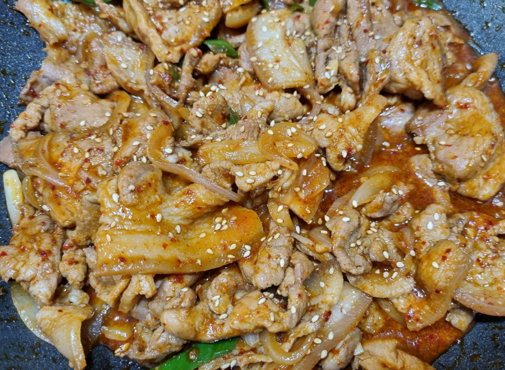

제육볶음

- 재료
얇은 돼지고기 앞다리살 600g, 양파 1개, 대파 1/2개, 다진마늘 1T, 간장 2T, 물엿 1T,
매실액 2T, 고추장 1T, 고춧가루 2T, 후추 톡톡
- 조리순서
- 키친타올로 돼지고기 핏물을 제거한 후, 마늘 1/2T, 간장 1T, 후추 톡톡 넣어서 재워놓습니다.
대파, 양파는 씻어서 썰어둡니다.
- 다진마늘 1/2T, 간장 1T, 물엿 1T, 매실액 2T, 고추장 1T, 고춧가루 2T, 후추 톡톡 넣어서 양념을 만듭니다.
- 예열한 팬에 고기를 볶다가 반쯤 익으면 양파를 넣고 볶아줍니다.
양파가 익을 때쯤 중불로 줄이고 양념을 넣어서 볶습니다.
- 마지막에 대파를 넣어서 살짝 볶아주면 완성입니다.